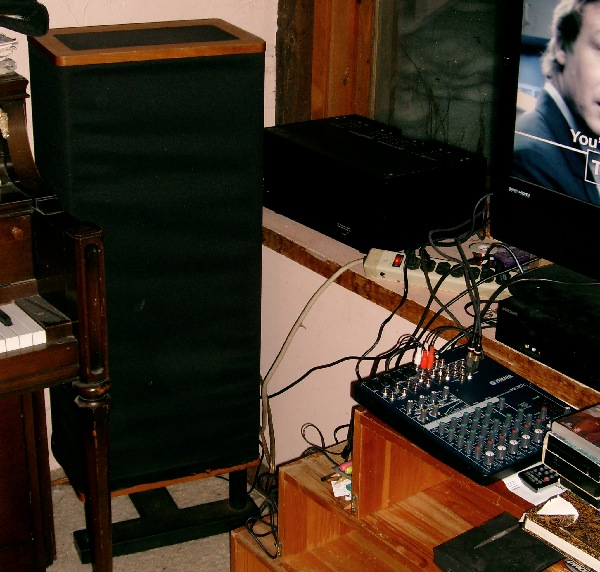
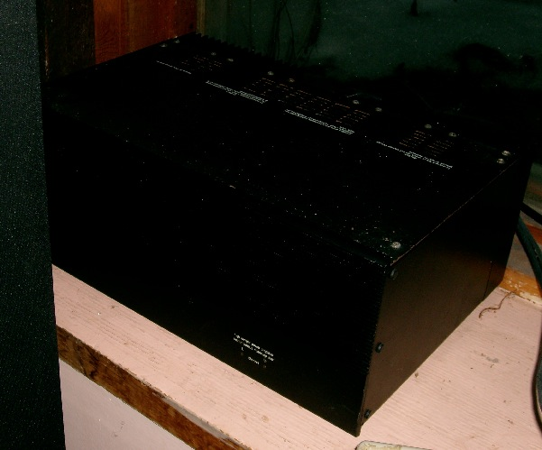

A friend of mine, many years ago, shopped for months to find the best stereo system he could He bought Vandersteen 2ce Signature II speakers and an Adcom GFA-555 power amplifier. He's leaving town, and didn't want to lug 250 pounds of stereo equipment with him, so he gave them to me. They still work. I bought a Yamaha MG102C Stereo Mixer to go with it. Not as good as a hi-fi pre-amp, but hopefully good enough for our living room use.
At post time, I have only verified that they work. I haven't yet plugged in a high-fidelity source, so I haven't been blown away, yet. Looking forward to it.
 
Vandersteen Speaker, Adcom Amp, and Yamaha Mixer
Adcom GFA555 Power Amplifier